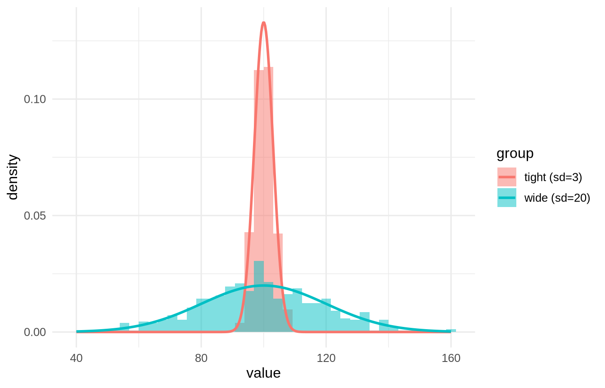

If you remember one chapter from this book, make it this one. Back in the introduction we YELLED it: VARIANCE. Central tendency tells us where a distribution sits; dispersion tells us how much it spreads - and spread is uncertainty. Two groups can have identical means and tell completely opposite stories. The difference is dispersion, and dispersion is the raw material of everything we do.
3.1 Learning Objectives
Understand why spread, not center, is the quantity statistics is really about.
Learn the common measures of dispersion and what each is good for.
Understand variance and the standard deviation, and why we square.
Understand degrees of freedom and why we divide by \(n-1\).
3.2 Same Center, Different Worlds
library(tidyverse) # dplyr, ggplot2, purrr, tibble, readr, stringr, forcatssource("_common.R") # book-wide helpers: round2(), fmt_p(), tidy2()set.seed(7)d <-tibble(`tight (sd=3)`=rnorm(500, mean =100, sd =3),`wide (sd=20)`=rnorm(500, mean =100, sd =20)) |>pivot_longer(everything(), names_to ="group", values_to ="value")# the theoretical curve for each group, from the parameters we simulated withcurves <-bind_rows(tibble(group ="tight (sd=3)", value =seq(40, 160, length.out =400)) |>mutate(density =dnorm(value, mean =100, sd =3)),tibble(group ="wide (sd=20)", value =seq(40, 160, length.out =400)) |>mutate(density =dnorm(value, mean =100, sd =20)))ggplot(d, aes(value, fill = group)) +geom_histogram(aes(y =after_stat(density)), bins =40,alpha =0.5, position ="identity") +geom_line(data = curves, aes(y = density, colour = group), linewidth =1) +labs(x ="value", y ="density") +theme_book()

Figure 3.1: Two distributions with the same mean and very different spread, each with its own theoretical curve. The spread is the uncertainty.
d |>summarise(mean =mean(value), .by = group) |>round2()
group
mean
tight (sd=3)
100.14
wide (sd=20)
99.22
Same mean, same “best guess” - but a guess of 100 is nearly certain for the tight group and nearly worthless for the wide one. The spread is the story.
3.3 The Simple Measures: Range and IQR
The crudest measure is the range (max minus min), which uses only two numbers and is therefore hostage to outliers. A sturdier cousin is the interquartile range (IQR) - the width of the middle 50% of the data:
The IQR ignores the tails, so it is to spread what the median is to center: robust, honest, and unbothered by a lone extreme value.
3.4 Variance: Why We Square
The measure that runs the whole show is variance - the average squared distance from the mean. Why squared? Because the plain distances from the mean always sum to zero (that is what the mean does), so we could never average them. Squaring solves that and, not coincidentally, hooks us straight into least squares.
\[s^2 = \frac{\sum (x - \bar{x})^2}{n - 1}\]
Let’s build it by hand and check against R:
deviations <- x -mean(x)sum(deviations) # ~0, which is exactly the problem
[1] 0
SS <-sum(deviations^2) # sum of squares - the numeratorn <-length(x)tibble(by_hand = SS / (n -1), r_var =var(x)) |>round2() # match
by_hand
r_var
143.84
143.84
The numerator, \(\sum(x-\bar{x})^2\), is the sum of squares - a quantity you will meet on every page from here on (it is the same SS that regression and ANOVA minimize and partition). Variance is just the sum of squares, averaged.
3.5 Degrees of Freedom: Why \(n-1\)
Notice we divided by \(n - 1\), not \(n\). Here is the honest reason. To compute the deviations we first had to estimate the mean from the same data. Once the mean is fixed, only \(n-1\) of the deviations are free to vary - the last one is forced, because they must sum to zero. We “spent” one degree of freedom estimating the mean, so we divide by what is left. Dividing by \(n\) would systematically underestimate the true spread; the \(n-1\) correction fixes that bias.
# demonstrate the bias: divide by n vs n-1, averaged over many samplesset.seed(11)truth <-25# true variance (sd = 5)est_n <-map_dbl(1:5000, \(i) { s <-rnorm(10, 0, 5)mean((s -mean(s))^2) # the n version})est_nm1 <-map_dbl(1:5000, \(i) var(rnorm(10, 0, 5))) # the n-1 versiontibble(divide_by_n =mean(est_n),divide_by_n_minus_1 =mean(est_nm1),truth = truth) |>round2()
divide_by_n
divide_by_n_minus_1
truth
22.55
25.06
25
Dividing by \(n\) lands low; dividing by \(n-1\) lands right on the truth. That is degrees of freedom earning their keep.
3.6 Standard Deviation: Back to Human Units
Variance is in squared units (squared inches, squared dollars) - useful for math, useless for talking. Take its square root and you get the standard deviation, back in the original units and interpretable as “the typical distance from the mean”:
NoteWorking in SPSS, Julia, or Python?
The code tabs below assume this chapter’s data is already loaded. Grab the one-file setup for your language from Getting the Book’s Data, run it once, then load what you need by name - this chapter uses ch03-spread, ch03-x. For example, book_data("ch03-spread") in R, Julia, or Python, or !bookdata name = "ch03-spread". in SPSS. Every language reads the same shipped files, so your numbers will match the ones printed here exactly.
import pandas as pddf = pd.read_csv("data/sim/ch03-x.csv")df.x.std(), df.x.var() # pandas divides by n - 1, like R
For a roughly normal variable, about 68% of values fall within one standard deviation of the mean, and about 95% within two - a rule of thumb we will lean on hard when we standardize in the z-distribution chapter.
ImportantVariance Is Uncertainty
Every inferential tool in this book is, at heart, a way of comparing variances: the variance we can explain against the variance we cannot. Regression’s \(R^2\) is a ratio of variances. ANOVA’s \(F\) is a ratio of variances. The standard error is built from variance. Master this chapter and the rest is bookkeeping. More differences to study, more variance, more to learn.
3.7 Challenge
TipDo One Yourself
Create two samples with the same mean but different spreads. Compute the variance and SD of each by hand (sum of squares over \(n-1\)) and confirm against var() and sd().
Re-run the \(n\) vs. \(n-1\) simulation with sample size 3 instead of 10. Is the bias from dividing by \(n\) bigger or smaller? Why does the correction matter more for tiny samples?
For a right-skewed variable, report both the SD and the IQR. Which better conveys the “typical spread,” and why?
3.8 Where We Go Next
We now have distributions, centers, and spreads for a single variable. But science is about relationships - how one variable moves with another. To get there we need one more idea, and it is variance’s social twin: covariance. First, though, we take these tools inferential by standardizing everything onto one common ruler: the z-distribution.